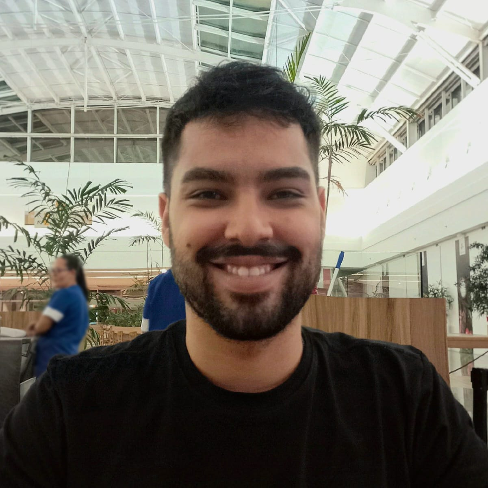

Vinicius Amorim
Consultor de Inovação e Tecnologia
Olá
Meu perfil e meus projetos
Sou engenheiro mecânico e mestrando em engenharia, com foco em robótica, inteligência artificial e desenvolvimento tecnológico. Possuo experiência na análise de projetos de Pesquisa e Desenvolvimento para obtenção de incentivos fiscais, como a Lei do Bem, atuando na construção de dossiês técnicos, análises de barreiras tecnológicas e fundamentação de atividades inovadoras. Tenho forte interesse em transformar conhecimento técnico em soluções aplicáveis à indústria, contribuindo tanto no desenvolvimento de tecnologias quanto na viabilização de recursos por meio de programas de fomento. Sou motivado por desafios, aprendizado constante e por gerar impacto através da inovação.